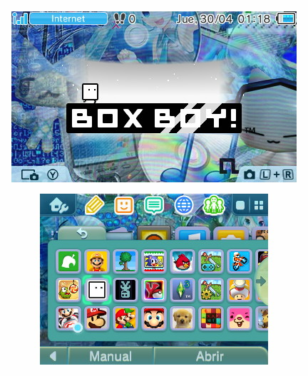
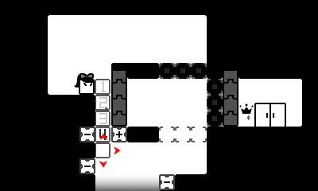

Recomendaciones de juegos en 3DS
Mas cosas
Boxboy

(data del 30/4/26)
Boxboy es el primer juego de la trilogía, la saga boxboy es del género puzzles los cuales se irán complicando a lo largo de 25 mundos. La historia de boxboy empieza con un planeta muerto a causa de un meteorito dirigido a este. Allí cae Qbby, un pequeño cubo con el superpoder de crear cajas las cuales serán la clave de este mundo ya que serán usadas como puentes, escaleras, sostenes, y un largo etcétera. Es catalogado uno de los mejores juegos de su género en la Eshop

gracias a CamixBearbr por ayudar